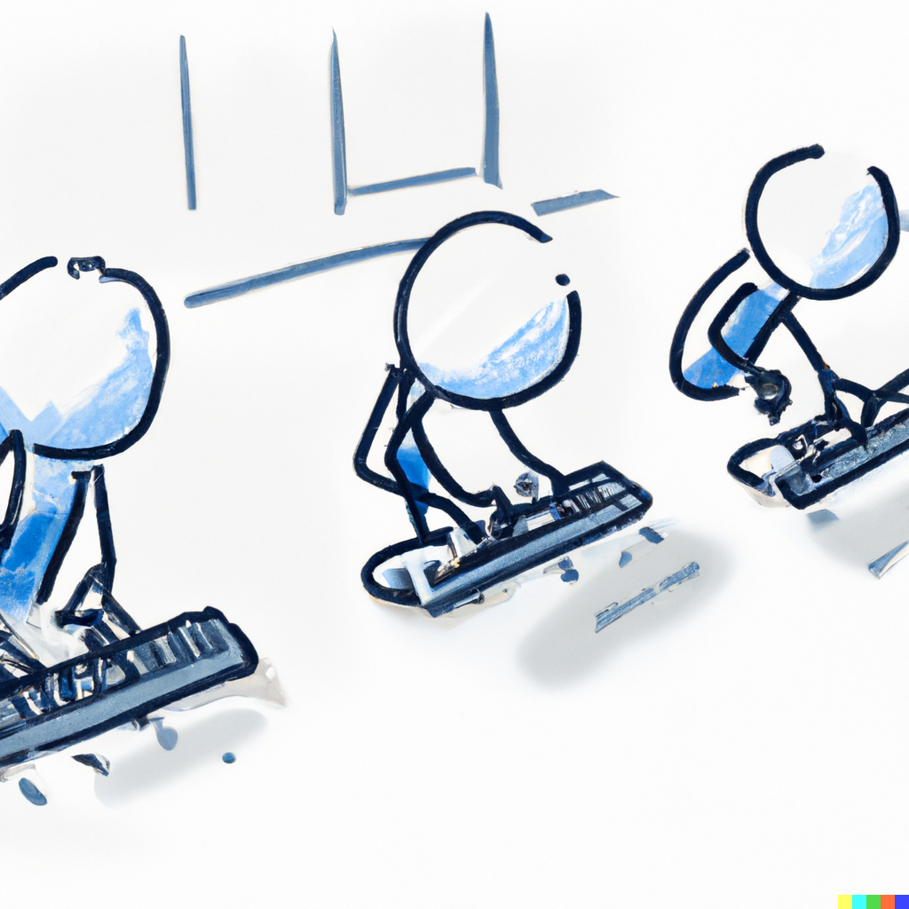
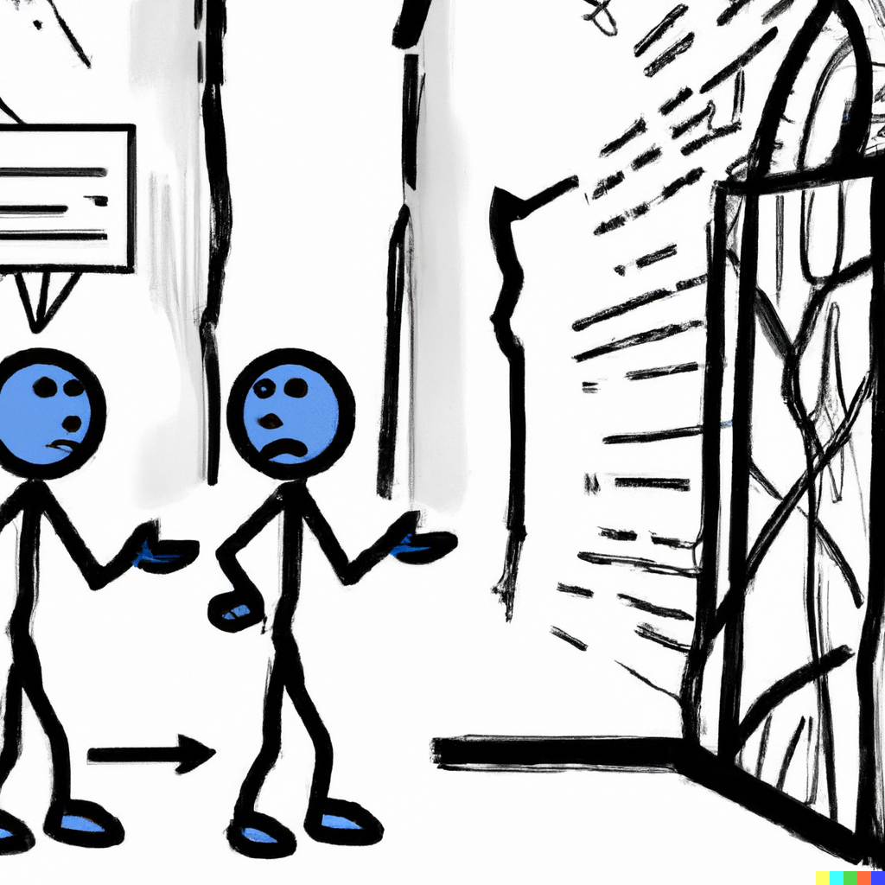

and probably never understood it in the first place
A Story in Five Parts
Part 1 - The Book
Part 2 - Off to a Great Start
Part 3 - Down to Business

Part 4 - No Leaders

Part 5 - Accountability
Epilog - Common Agile Failures
Focus on 100% resource utilization
Lack of ownership
Ineffective or absent collaboration
Remedial Agile
Properties of Agile Teams
Self-organizing
Cross-functional
Highly engaged
Empowered
Constantly collecting feedback
The Whole Point
Build the right thing
Always maintain your release capability
Introducing Shape Up
There is a book
Obligatory XKCD Reference
Introducing Shape Up (2)
Shape up is a macro-level agile methodology focused on the product / engineering collaboration
Pitch
A written proposal expressing a problem area, solution parameters, justification, and boundaries
NOTE: Anyone can write a pitch!
Appetite
Budget, in the sense of how much "product" is willing to spend on a specific pitch. Typically expressed as either a "Small Batch" of 2 weeks or a "Big Batch" of 6 weeks.
Negotiation
Discussion, between product, engineering, design, and test, to decide a preferred implementation within the appetite.